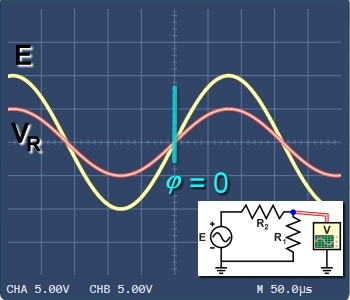
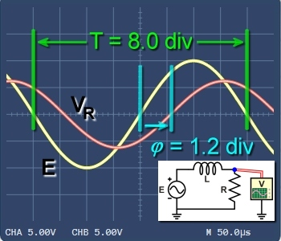
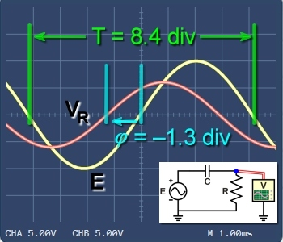
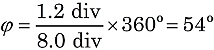
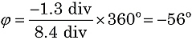

Measuring Phase in AC Circuits
|  |
|
Figure 1. Measuring voltage VR in resistive circuit: no phase difference. |
|  |
|
Figure 2. Supply voltage E leads VR by phase difference φ in inductive circuit. |
|  |
|
Figure 3. Supply voltage E lags VR in a series capacitive circuit. |
Using the power supply E as a reference, we see that oscillations in an AC circuit don't always rise and fall together. They can lag behind, or run ahead. We use the term phase to measure these differences.
Observing "in-phase" signals
Figure 1 shows the voltage across a resistor in a purely resistive circuit. The oscillations of E and VR are in phase. The amplitude of VR of depends on the circuit values, but the oscillations will always be in phase. The curves for E and VR rise and fall together.
A convenient check is to examine where the rising curves cross the horizontal axis. In Figure 1 both signals cross at the same point. So, we say there is no phase difference, or φ = 0.
Observing phase difference in an inductive circuit
Figure 2 shows E and VR in a series inductive circuit. Because of the inductor, the supply voltage E will lead the circuit current—and the resulting voltage drop VR. (Remember: ELI the ICEman.)
As before, we can examine where the two rising curves cross the horizontal axis. In Figure 2 we see VR crossing the axis 1.2 divisions after E, or φ = 1.2 div.
Calculating phase angle
With this time/div scale, we see that one cycle or 360°-period of E spans 8.0 divisions. So, we can calculate the phase angle as a fraction of one complete cycle:

Because the difference is positive, the phase angle is also positive.
Phase difference in a capacitive circuit
In a similar way Figure 3 shows E and VR in a series capacitive circuit. Because of the capacitor, the supply voltage E will follow the circuit current—and the resulting voltage drop VR. (Remember: ELI the ICEman.)
Again, we can examine where the rising E and VR curves cross the horizontal axis. In Figure 3 we see VR crossing the axis 1.3 divisions before E, or φ = –1.3 div.
In this circuit, we see that one cycle or 360°-period spans 8.4 divisions. So, again we can calculate the phase angle:

Because the difference is negative, this phase angle is also negative.